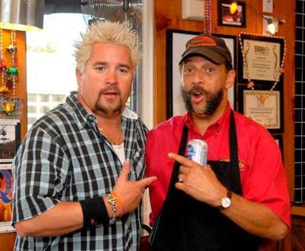

From Eastern Carolina pulled pork, inland to Memphis and St. Louis for ribs, then south to Texas for smoky brisket. Come in and enjoy a great eating tour of regional barbecue. Look at our real pit barbecue- That pink color that extends from the tasty outside layer of "bark" into the meat is called the "smoke ring." It is proff that it is all authentically slow smoked in the traditional Southern manner.
 Our grill is crackling 24/7My quest for authentic barbecue has taken me to the great competitions across the South: Memphis in May, The Royal, The Jack Daniels Invitation, and many others. First, as a member of a national championship team; now, when time allows, as a certified judge for Kansas City Barbeque Society competitions. Formerly the Connecticut state Representative for the New England Barbeque Society, and recently elected to Board of Directors of the National BBQ Association. My Eastern Carolina vinegar sauce won the "Award of Excellence" at the NBBQ annual convention. I've competed with, and learned from the South's best Pit Masters. Now, I am proud to be able to bring authentic Southern barbeque to my friends here in the North.